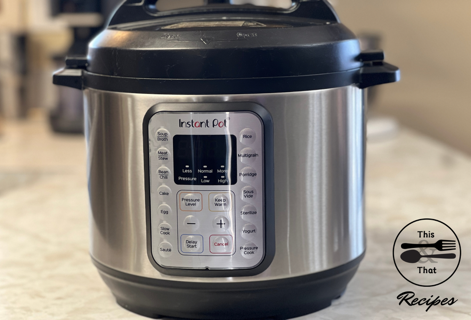

The Instant Pot is one of my favorite tools. I use this to cook a variety of foods: chicken, soups, potatoes, refried beans, cheesecake, yogurt, rice, and more. I love how easy it is to use as well as the superb way that it cooks the food. After several months of owning one, I purchased a second one. This allows me to cook main and side dishes at the same time. Having a second Instant Pot is also convenient on days that I make yogurt because that is a full day’s process.
My Bosch mixer is a staple in my kitchen. It makes the best bread! It also whips up large batches of dough or batter. I use this for making all of my yeast breads. When making white, yeast breads, the first rise time can be eliminated in recipes due to the perfect kneading power of this machine. This speeds up the process of making yeast bread. Saving an hour on rise time when craving a warm cinnamon roll is a win!

This chopper has been a time-saving tool in my kitchen. It also adds more consistency to my cuts to create better dishes. Not only are the even cuts more pleasing to the eye, but they also cook more evenly as well. This tool also makes meal prepping a breeze. I often cut peppers and onions from my garden with this tool to freeze for later use. It also helps me whip up a batch of fresh salsa in no time! This tool also makes it easy for kids to get involved in the kitchen, chopping and dicing.